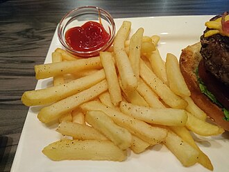

Making fries at home is incredibly easy. All you need are some potatoes, some cooking oil, and a fire.
Cut the potatoes into 1/4 inch sticks. Submerge them
in a bowl of cold water to rinse of surface starch
Leave the potato sticks in the water for at least 30 minutes
to remove any excess starch. Drain water from bowl afterwards.
Add water to a pot and bring to a boil. Add 1 tablespoon
of salt to the water. Once boiling, add the potato sticks to
the pot and let it boil for 8 to 10 minutes until they are tender.
Remove potato sticks from boiling water and spread them
out over some paper towels. Allow them 10 to 15 minutes to dry thoroughly.
Heat your oil to 325°F. Fry the potatoes for about 5 minutes.
Remove from oil and spread them on a paper towel to drain.
Increase the temperature to 375°F. Put potatoes in for 5 minutes
until they are golden brown and crispy. Transfer fries to a
paper towel once again to drain excess oil.
Put the fries in a bowl and sprinkle in salt and any other
additional seasonings you want to add. Toss gently and enjoy.